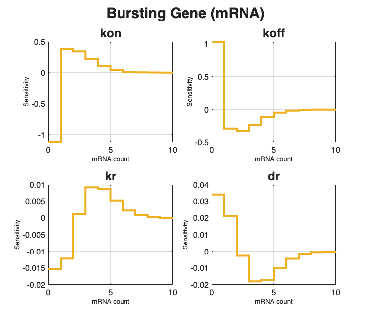
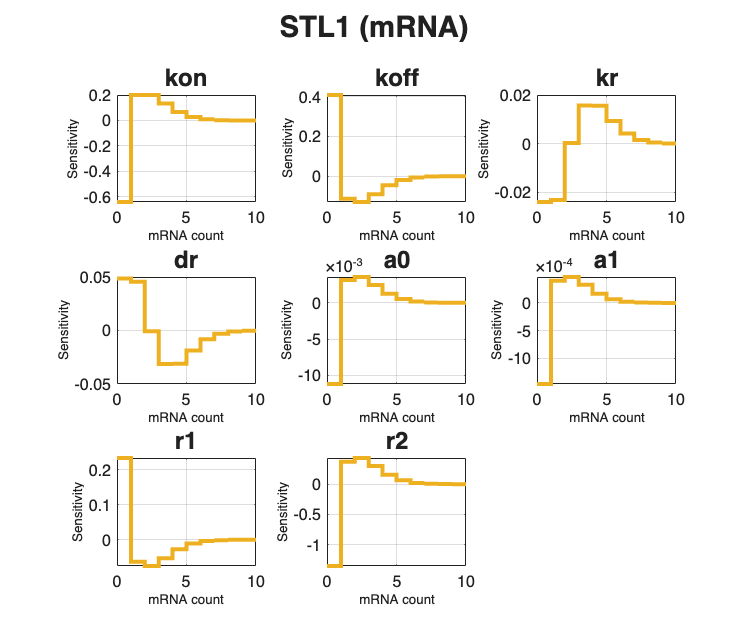
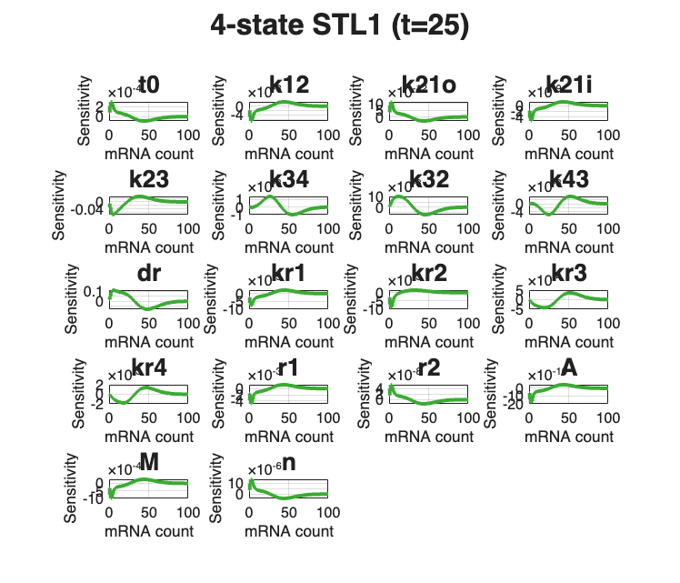

Contents
- SSIT/Examples/example_6_SensitivityAnalysis
- Section 2.2: Sensitivity analysis
- Preliminaries
- Load pre-computed FSP solutions:
- Ex(1): Solve sensitivities of the bursting gene model
- Solve FSP sensitivities
- Ex(2): Solve sensitivities of the time-varying STL1 yeast model
- Solve FSP sensitivities
- Ex(3): Solve sensitivities of the 4-state time-varying STL1 yeast model
- Solve FSP sensitivities
- Save models & sensitivities
SSIT/Examples/example_6_SensitivityAnalysis
%%%%%%%%%%%%%%%%%%%%%%%%%%%%%%%%%%%%%%%%%%%%%%%%%%%%%%%%%%%%%%%%%%%%%%%%%%%
Section 2.2: Sensitivity analysis
* Compute model sensitivities to small changes in the model parameters
%%%%%%%%%%%%%%%%%%%%%%%%%%%%%%%%%%%%%%%%%%%%%%%%%%%%%%%%%%%%%%%%%%%%%%%%%%%
Preliminaries
Use the models from example_1_CreateSSITModels and computed FSP solutions from example_4_SolveSSITModels_FSP
% clear % close all % example_1_CreateSSITModels % example_4_SolveSSITModels_FSP
Load pre-computed FSP solutions:
load('example_4_SolveSSITModels_FSP.mat')
% View model summaries Model_FSP.summarizeModel STL1_FSP.summarizeModel STL1_4state_FSP.summarizeModel %%%%%%%%%%%%%%%%%%%%%%%%%%%%%%%%%%%%%%%%%%%%%%%%%%%%%%%%%%%%%%%%%%%%%%%%%%%
Species:
offGene; IC = 1; discrete stochastic
onGene; IC = 0; discrete stochastic
mRNA; IC = 0; discrete stochastic
Reactions:
Reaction 1:
s1: 1*offGene --> 1*onGene
w1: kon * offGene
Reaction 2:
s2: 1*onGene --> 1*offGene
w2: koff * onGene
Reaction 3:
s3: NULL --> 1*mRNA
w3: kr * onGene
Reaction 4:
s4: 1*mRNA --> NULL
w4: dr * mRNA
Model Parameters:
{'kon' } {[0.2000]}
{'koff'} {[0.2000]}
{'kr' } {[ 10]}
{'dr' } {[ 5]}
Species:
offGene; IC = 1; discrete stochastic
onGene; IC = 0; discrete stochastic
mRNA; IC = 0; discrete stochastic
Reactions:
Reaction 1:
s1: 1*offGene --> 1*onGene
w1: kon * offGene
Reaction 2:
s2: 1*onGene --> 1*offGene
w2: onGene*koff/(1+Hog1)
Reaction 3:
s3: NULL --> 1*mRNA
w3: kr * onGene
Reaction 4:
s4: 1*mRNA --> NULL
w4: dr * mRNA
Input Signals:
Hog1(t) = (a0+a1*exp(-r1*t)*(1-exp(-r2*t))*(t>0))
Model Parameters:
{'kon' } {[0.2000]}
{'koff'} {[0.2000]}
{'kr' } {[ 10]}
{'dr' } {[ 5]}
{'a0' } {[ 5]}
{'a1' } {[ 10]}
{'r1' } {[0.0040]}
{'r2' } {[0.0100]}
Species:
g1; IC = 1; discrete stochastic
g2; IC = 0; discrete stochastic
g3; IC = 0; discrete stochastic
g4; IC = 0; discrete stochastic
mRNA; IC = 0; discrete stochastic
Reactions:
Reaction 1:
s1: 1*g1 --> 1*g2
w1: k12*g1
Reaction 2:
s2: 1*g2 --> 1*g1
w2: (max(0,k21o*(1-k21i*Hog1)))*g2
Reaction 3:
s3: 1*g2 --> 1*g3
w3: k23*g2
Reaction 4:
s4: 1*g3 --> 1*g2
w4: k32*g3
Reaction 5:
s5: 1*g3 --> 1*g4
w5: k34*g3
Reaction 6:
s6: 1*g4 --> 1*g3
w6: k43*g4
Reaction 7:
s7: NULL --> 1*mRNA
w7: kr1*g1
Reaction 8:
s8: NULL --> 1*mRNA
w8: kr2*g2
Reaction 9:
s9: NULL --> 1*mRNA
w9: kr3*g3
Reaction 10:
s10: NULL --> 1*mRNA
w10: kr4*g4
Reaction 11:
s11: 1*mRNA --> NULL
w11: dr*mRNA
Input Signals:
Hog1(t) = A*(((1-(exp(1)^(-r1*(t-t0))))*exp(1)^(-r2*(t-t0)))/(1+((1-(exp(1)^(-r1*(t-t0))))*exp(1)^(-r2*(t-t0)))/M))^n*(t>t0)
Model Parameters:
{'t0' } {[ 3.1700]}
{'k12' } {[ 78]}
{'k21o'} {[ 192000]}
{'k21i'} {[ 3200]}
{'k23' } {[ 0.4020]}
{'k34' } {[ 7.8000]}
{'k32' } {[ 1.6200]}
{'k43' } {[ 2.2800]}
{'dr' } {[ 0.2940]}
{'kr1' } {[ 0.0468]}
{'kr2' } {[ 0.7200]}
{'kr3' } {[ 59.4000]}
{'kr4' } {[ 3.2400]}
{'r1' } {[ 0.0041]}
{'r2' } {[ 0.4260]}
{'A' } {[9.3000e+09]}
{'M' } {[6.4000e-04]}
{'n' } {[ 3.1000]}
Ex(1): Solve sensitivities of the bursting gene model
from example_1_CreateSSITModels
%%%%%%%%%%%%%%%%%%%%%%%%%%%%%%%%%%%%%%%%%%%%%%%%%%%%%%%%%%%%%%%%%%%%%%%%%%% % Make a copy of the bursting gene model solved by FSP for sensitivity % analysis: Model_sens = Model_FSP;
Solve FSP sensitivities
Set solution schemes to FSP sensitivity:
Model_sens.solutionScheme = 'fspSens'; % Solve the sensitivity problem: [~,~,Model_sens] = Model_sens.solve(Model_FSP.Solutions.stateSpace); % Plot the results from the sensitivity analysis: Model_sens.plotFSP(Model_sens.Solutions,Model_FSP.species(3),'sens',40,... [], {'linewidth',3}, AxisLabelSize=12, TickLabelSize=12, XLim=[0,10],... TitleFontSize=22, Title="Bursting Gene (mRNA)", Colors=[0.93,0.69,0.13]) %%%%%%%%%%%%%%%%%%%%%%%%%%%%%%%%%%%%%%%%%%%%%%%%%%%%%%%%%%%%%%%%%%%%%%%%%%%
Ex(2): Solve sensitivities of the time-varying STL1 yeast model
from example_1_CreateSSITModels
%%%%%%%%%%%%%%%%%%%%%%%%%%%%%%%%%%%%%%%%%%%%%%%%%%%%%%%%%%%%%%%%%%%%%%%%%%% % Make a copy of the time-varying STL1 yeast model solved by FSP for % sensitivity analysis: STL1_sens = STL1_FSP;
Solve FSP sensitivities
Set solution schemes to FSP sensitivity:
STL1_sens.solutionScheme = 'fspSens'; % Solve the sensitivity problem: [~,~,STL1_sens] = STL1_sens.solve(STL1_FSP.Solutions.stateSpace); % Plot the results from the sensitivity analysis: STL1_sens.plotFSP(STL1_sens.Solutions,STL1_FSP.species(3),'sens',40,[],... {'linewidth',3}, AxisLabelSize=12, TickLabelSize=12, XLim=[0,10],... Title="STL1 (mRNA)", TitleFontSize=22, Colors=[0.93,0.69,0.13]) %%%%%%%%%%%%%%%%%%%%%%%%%%%%%%%%%%%%%%%%%%%%%%%%%%%%%%%%%%%%%%%%%%%%%%%%%%%
Ex(3): Solve sensitivities of the 4-state time-varying STL1 yeast model
from example_1_CreateSSITModels
%%%%%%%%%%%%%%%%%%%%%%%%%%%%%%%%%%%%%%%%%%%%%%%%%%%%%%%%%%%%%%%%%%%%%%%%%%% % Make a copy of the 4-state time-varying STL1 yeast model solved by FSP: STL1_4state_sens = STL1_4state_FSP;
Solve FSP sensitivities
Set solution schemes to FSP sensitivity:
STL1_4state_sens.solutionScheme = 'fspSens'; % Solve the sensitivity problem: [~,~,STL1_4state_sens] = STL1_4state_sens.solve; % Plot the results from the sensitivity analysis STL1_4state_sens.plotFSP(STL1_4state_sens.Solutions,... STL1_4state_sens.species(5), 'sens', 40, [],... {'linewidth',3}, Colors=[0.23,0.67,0.2], AxisLabelSize=15,... TickLabelSize=12, XLim=[0,100],... Title="4-state STL1 (t=25)", TitleFontSize=24)
Save models & sensitivities
saveNames = unique({ ...
'Model_sens'
'STL1_sens'
'STL1_4state_sens'
});
save('example_6_SensitivityAnalysis',saveNames{:})